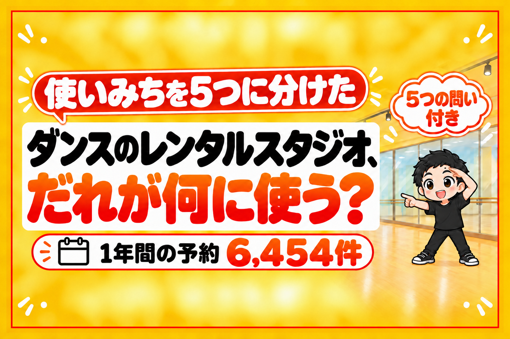

ダンスのレンタルスタジオを借りる人は、7割がダンスです。残りの3割は、9つの使いみちに分かれます。
そして、使いみちがちがうと、来る時間も、人数も、使う時間も、まるでちがいます。
ヨガの人は、朝と昼に来ます。
演劇の人は、昼に3人以上で、3時間近く使います。
撮影の人は、1人で来て、深夜にも使います。
だから、物件と内装を決める前に、「だれに使ってもらうか」を1つ決めるのが近道です。
数字は、首都圏で運営している5つのダンスのレンタルスタジオの、1年間の予約6,454件から出しました。
予約した人が、予約サイトの選択肢から選んだ使いみちです。
(毎週決まった時間に使う定期のお客さまは、この数に入っていません)
5つのグループに分けて、だれが・何人で・いつ・何時間使うのかを書きます。
使いみちは、5つのグループに分かれる
7割はダンス。残りの3割は、体を動かす・声と音・撮る・学ぶ
| グループ | 使いみち | 予約の割合 |
|---|---|---|
| ①踊る | ダンス | 70.3% |
| ②体を動かす | トレーニング・ヨガとピラティス・格闘技と武道 | 11.2% |
| ③声と音を出す | 演劇と稽古・音楽と歌 | 6.6% |
| ④撮る・見せる | 撮影と配信・ポージングとウォーキング | 2.8% |
| ⑤集まって学ぶ | 講座とワークショップ・会議と交流 | 1.5% |
| ほか | その他・未記入 | 7.4% |
(2025年9月〜2026年8月・予約6,454件)
ダンスのつぎは、どれも1割に届きません。
でも、グループごとに、使い方の形がはっきりちがいます。
①踊る人: 1人の練習も、5人以上のチームも
ダンスの予約は、1人の予約が約4割、5人以上が約3割です。
自主練の1人と、チームの練習が、同じ部屋を使い分けています。
1回の利用は、平均1.8時間。
始める時間は、朝・昼・夜がほぼ3等分で、深夜も7%あります。
用意するのは、大きな鏡と、音を出せる環境。
1人でも借りやすいように、短い時間から予約できる価格設定にしておくと、すき間の時間にも予約が入りやすくなります。
②体を動かす人: ヨガは朝と昼、格闘技は朝
同じ「体を動かす」でも、来る時間がちがいます。
- ヨガとピラティス: 朝と昼で9割以上(夜は7%)
- トレーニング: 昼が4割台でいちばん多い
- 格闘技と武道: 朝が4割でいちばん多い
ダンスが少ない朝と昼の時間を、このグループが使ってくれます。
用意するのは、床の上で動けるマットと、朝から使える入り方の案内。
朝と昼に来る人が中心なので、住宅地に近い物件と相性がいい使いみちです。
例えば、ぼくの店でも、同じくらいの広さの部屋なのに、ヨガが8%台の店と、1%に届かない店があります。
同じ設備でも、街によって来る人が変わります。
③声と音を出す人: 長く、大人数で
演劇と音楽は、人数が多くて、時間が長い使いみちです。
- 演劇と稽古: 1回 平均2.9時間・5人以上の予約が約4割・昼が6割
- 音楽と歌: 1回 平均2.2時間・人数のまん中は4人・5人以上が4割台
ダンス(1.8時間)より、1回の予約が長くなります。
用意するのは、人数が入る広さと、長く使う人向けの時間のパック。
音の出る使いみちなので、上下の部屋への音の伝わり方は、契約の前に確かめておきます。
④撮る・見せる人: 1人で来て、深夜にも
撮影と配信は、1人の予約が5割以上です。
始める時間の約1割は、深夜(22時〜6時)です。
ポージングとウォーキングは、9割近くが1人の予約です。
用意するのは、白い壁と、明るい照明。
ダンスのレンタルスタジオでも、撮影の人が見るのは、鏡よりも壁です。

⑤集まって学ぶ人: いちばん長く、いちばん大人数
講座・ワークショップと、会議・交流は、数は少なくても使い方が大きいです。
- 講座とワークショップ: 1回 平均3.1時間・5人以上の予約が半分
- 会議と交流: 1回 平均3.3時間・5人以上の予約が7割
1回の予約で、ダンスの倍近い時間を使ってくれます。
用意するのは、たためる椅子と机。
ダンスのレンタルスタジオのままでも、椅子と机があるだけで、このグループの予約の入り口になります。
予約サイトで、来る人が変わる
同じ部屋でも、どこから予約されたかで、使いみちの割合が変わります。
| 予約された場所 | ダンス | ダンス以外で多いもの |
|---|---|---|
| お店の公式サイト | 77.2% | ヨガとピラティス 4.4% |
| インスタベース | 56.3% | トレーニング・演劇 各8.1% |
| スペースマーケット | 38.2% | トレーニング 28.3%・撮影 14.0% |
公式サイトに来るのは、ダンスの人がほとんどです。
ダンス以外の人は、ポータルサイト(いろいろなスペースをまとめて探せる予約サイト)から来ています。
さらに、ポータルサイトの予約では、ダンスの割合が年ごとに下がっています。
- 65%(2024年1〜8月)→ 60%(2024年9月〜2025年8月)→ 52%(直近12ヶ月)
かわりに、トレーニングは9%→12%、撮影は4%→6%にふえました。
ダンス以外の使いみちも取りたいなら、公式サイトだけでなく、ポータルサイトにも載せておくのが近道です。
物件と内装を決める前の、5つの問い
物件を見に行く前に、この5つに答えてみてください。
- だれに、いちばん使ってもらいたいか?(5つのグループから1つ)
- その人たちは、何時に来るか?(朝と昼か、夜か、深夜か)
- その人たちは、何人で来るか?(1人か、5人以上か)
- 1回に、何時間使うか?(2時間前後か、3時間以上か)
- その人たちは、どこから予約するか?(公式サイトか、ポータルサイトか)
1つ目が決まれば、2〜5の答えは、この記事の数字から出せます。
答えが出たら、物件の場所と広さ、内装、価格設定の形が、1つの方向にそろいます。
始め方の全体は、こちらにまとめています。

まとめ
ダンスのレンタルスタジオを借りる人は、7割がダンス。
残りの3割を見ると、3つのことが分かります。
- 使いみちで、来る時間がちがう: ヨガは朝と昼、撮影は深夜にも、ダンスは朝・昼・夜の3等分
- 使いみちで、人数と時間がちがう: 撮影は1人、演劇・講座・会議は5人以上で3時間前後
- 予約サイトで、来る人がちがう: 公式サイトはダンス、ポータルサイトはダンス以外が多い
部屋を探す前に、だれに使ってもらうかを1つ決める。
それだけで、物件も内装も、迷う数がぐっと減ります。
あなたが開きたい部屋は、5つのグループのどれに使ってもらう部屋ですか?
1部屋目で黒字にするには、1日何時間の予約が必要か。
無料の診断で、30秒で出せます。
診断のあとに、ぼくが物件を決めるときの順番を1日1通ずつ届けるメール講座(全8通)も受け取れます。

物件探しから、月いくら残るかの計算、出店、撤退まで。23店舗の数字といっしょに、教科書にぜんぶ書いています。
レンタルスペース経営の教科書

販売価格は3部売れるごとに2,000円ずつ値上がりします（上限あり）。内容・最新価格は販売ページをご確認ください。
▼もう1つの副業、AI社員だけのeBay輸出店の実録🐹

▼ブログ(レンスペ×eBay、全記事まとめ)